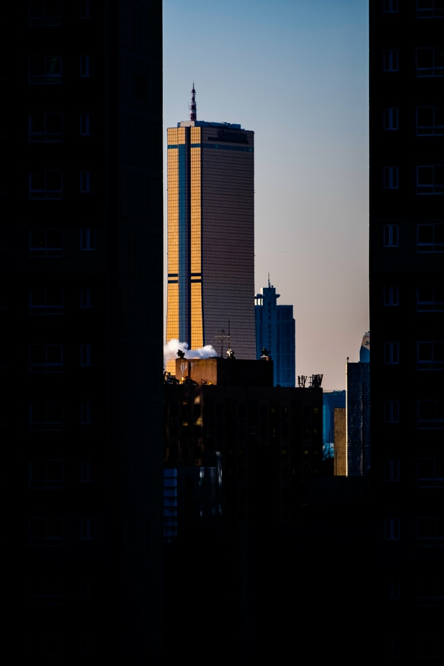
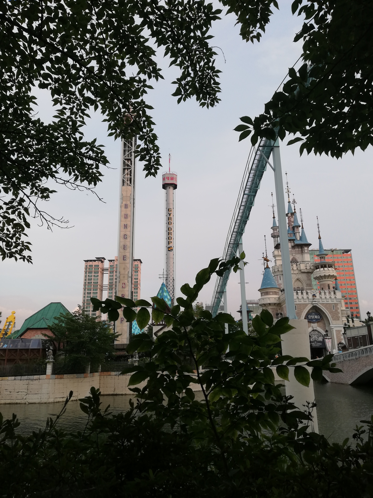
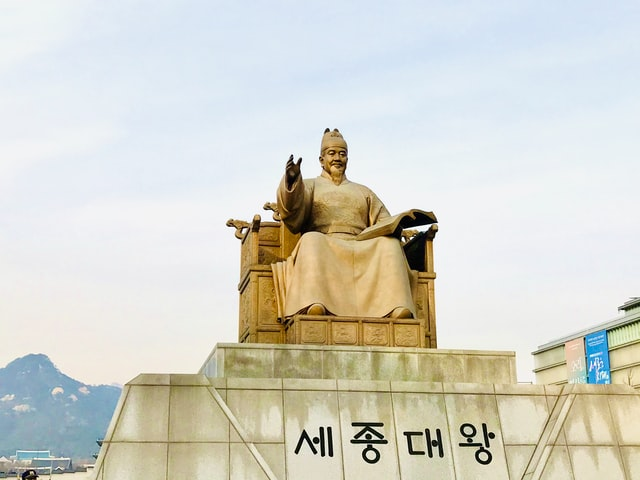

Popular Tour Spots in South Korea!
~These are some of the popular spots to visit when taking a trip to South Korea!~
Namsan Tower
- Located in Seoul
- One of the tallest towers in Asia
- Includes:
- Observatories
- Restaurants
- Namsan Park near the area
- Cable car
|
 |
Jeju Island
- Island south of the peninsula
- Largest island in South Korea
- Activities:
- A dormant volcano
- Jeju Naval Base
- Natural recreation forest
- Ferry ride around the island
|
 |
63 Building
- Located in Yeoiudo Island
- Tallest gold-clad building
- Includes:
- An aquarium
- IMAX Theater
- Wax Mueseum
- Art Gallery
|
 |
Lotte World
- Located in Seoul
- World's Largest indoor theme park
- Includes:
- Indoor/outdoor theme park
- Luxury hotels
- Live shows
- Rides for kids and adults
|
 |
Gamcheon Village
- Located in Busan
- Built on a steep mountain slope
- Twisted alleyways
- Brightly painted houses
- Originally a place for poor Korean population in the 20s
|
|
Seorak Mountain
- Located in Gangwon-do
- South Korea's third largest mountain
- Translates to "Snowy Peak Mountain"
- Includes:
- Two Buhddist temples
- Cable car ride to top
- Cave on the side of the mountain
|
|
Changdeokgung
- Located in Seoul
- Built in 1412
- One of the "Five Grand Palaces" in Seoul
- Hosts events such as a moonlight tour
|
 |
Gyungbokgung
- Located in Seoul
- Built in 1315
- One of the "Five Grand Palaces" in Seoul
- Observe events such as:
- Changing of the Royal Guard
- Watching traditional performances
|
 |
Sejong the Great
- Located in Seoul
- Fourth king of the Josen Dynasty
- One of South Korea's most important historical figures
- Created Hangul (Korean alphabet)
|
 |